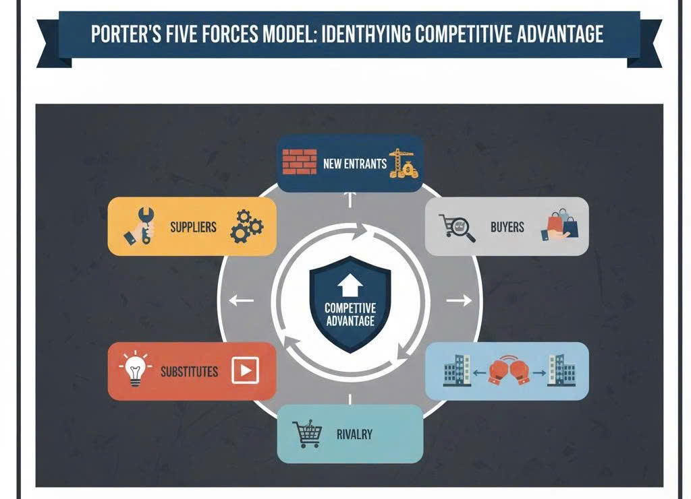

Porter's Five Forces Model: A Framework for Identifying Competitive Advantage
For any strategic investor or business leader, the question of profitability is not solely dependent on a company's internal capabilities but, critically, on the attractiveness of the industry in which it operates. The seminal work of Michael Porter, the Five Forces Model, provides a robust framework for systematically analyzing the structural forces that determine the intensity of competition and the long-run profit potential within any market. Understanding these forces allows firms to identify a sustainable Competitive Advantage and position themselves optimally.
The Goal: Determining Industry Attractiveness
Porter's model is predicated on the idea that industry profitability is not a matter of luck; it is a direct function of five distinct, yet interconnected, competitive forces. A strong industry is one where these forces are weak, allowing firms to charge higher prices and retain higher profit margins. Conversely, when these forces are strong, competition intensifies, driving prices down toward the cost of production and diminishing the value captured by the firms.
1. Threat of New Entrants (The Barrier to Entry)
This force measures how easy or difficult it is for new companies to enter the industry. A high threat of new entrants signals that current firms must constantly compete to keep prices low and maintain high investment levels to differentiate their products.
Strategic Considerations for Investors: The strength of this threat is inversely proportional to the height of Entry Barriers. These barriers can include Economies of Scale (requiring large startup capital to compete on cost), strong Brand Identity (making it difficult for newcomers to gain trust), necessary Capital Requirements (high initial investment), and Government Policy (licensing or regulatory hurdles). Industries with low barriers, such as local restaurants or simple e-commerce, face a constant challenge to profitability.
2. Bargaining Power of Suppliers (The Input Cost Lever)
Suppliers hold power when they can demand higher prices for their inputs (raw materials, labor, components) or reduce the quality of goods and services they provide. This power directly squeezes the profit margins of firms within the industry.
Strategic Considerations for Investors: Supplier power is typically high when: the supplier industry is more concentrated than the buying industry (few suppliers, many buyers); the buyer faces high Switching Costs when changing suppliers; or the input is highly differentiated (a unique or patented component). Assessing this force helps identify companies that are highly vulnerable to input cost shocks versus those with leverage to negotiate favorable terms, such as large retailers dealing with numerous small manufacturers.
3. Bargaining Power of Buyers (The Price Pressure)
Buyers have power when they can force prices down, demand higher quality, or require more comprehensive service at the same price. This is the flip side of supplier power.
Strategic Considerations for Investors: Buyer power is generally high when: the buyers are concentrated or purchase in large volumes (giving them volume discounts); the product purchased is undifferentiated or a commodity (allowing buyers to easily switch to the cheapest option); or the buyers possess a credible threat of Backward Integration (meaning they could start producing the input themselves). Businesses selling highly standardized products to a few large customers (e.g., auto part suppliers to major car manufacturers) face intense buyer power, restricting their pricing strategy.
4. Threat of Substitute Products or Services (The Alternative Solution)
A substitute is a different product or service that fulfills the same core need of the customer. This force places a ceiling on the price that firms can profitably charge.
Strategic Considerations for Investors: The threat is high if the substitute offers a comparable price-performance trade-off and if the buyer's Switching Costs to the substitute are low. For example, the threat of substitution for traditional cable TV is immense due to streaming services (Netflix, etc.). Even if competitors within the industry are weak, a cheap and effective substitute can decimate the entire industry's profitability. Investors must look for firms whose products offer unique value propositions that substitutes cannot easily replicate.
5. Intensity of Rivalry Among Existing Competitors (The Fight for Market Share)
This force describes the degree of competition among the firms currently operating in the industry. High rivalry generally results in destructive price wars, high-cost advertising battles, and excessive investment in product development, all of which erode profit margins.
Strategic Considerations for Investors: Rivalry is intense when: the industry has numerous competitors of roughly equal size; industry growth is slow (forcing firms to steal market share from one another); products lack differentiation (pushing competition purely to price); and Exit Barriers are high (meaning companies must stay and fight even if they are unprofitable, perhaps due to specialized assets or labor agreements). Highly concentrated, slow-growing, capital-intensive industries often suffer from debilitating rivalry.
Conclusion: Identifying Sustainable Competitive Advantage
The true strategic utility of the Five Forces Model is that it allows a firm to select one of two primary paths to establish a sustainable Competitive Advantage relative to the industry structure:
- Cost Leadership: Positioning the firm to be the low-cost producer in the industry, allowing it to remain profitable even when competitors erode prices through intense rivalry or buyer power.
- Differentiation: Offering a unique product or service that buyers perceive as distinct and valuable, thereby reducing the buyer's sensitivity to price and insulating the firm from competitive pressure and substitutes.
By thoroughly evaluating the strength of each of the five forces, strategic investors gain the profound insight necessary to determine not just who the winners are, but why they win, and whether the spoils of victory are even worth the battle in the first place.
Resource: Hai Dang - Bachelor in Vin University